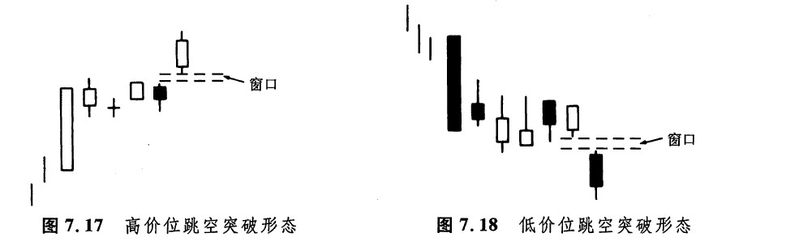
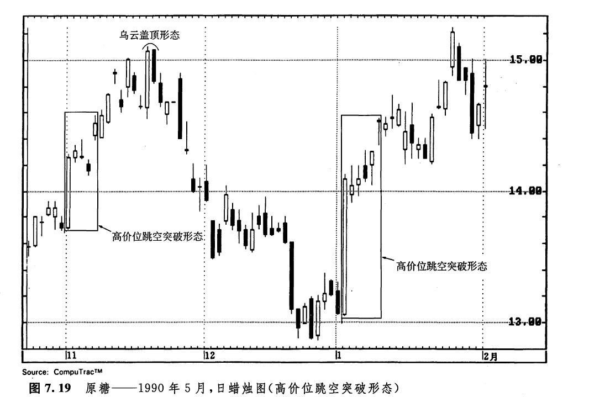
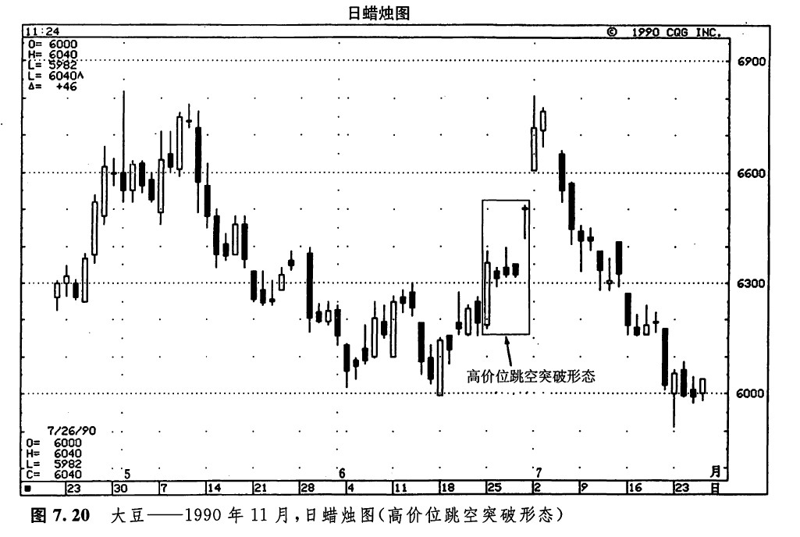
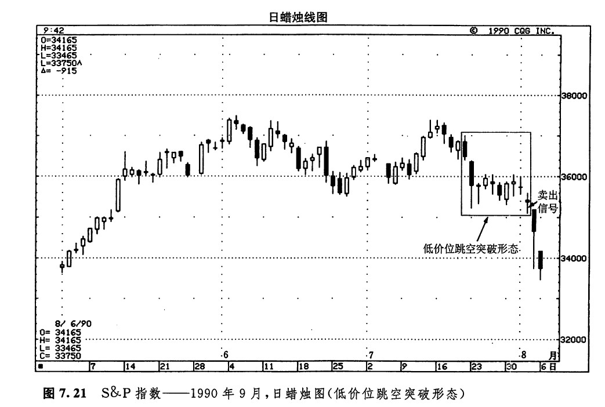

在上升趋势中，当市场经历了一两个急剧上涨的交易日后，在正常情况下都需要一个调整消化的过程。有时，这个整理过程是通过一系列小实体来完成的。如果在一根坚挺的蜡烛线之后，出现了一群小实体的蜡烛线，则表明市场已经变得犹豫不决了。然而，一旦后来某一天的开市价从这群小实体处向上跳空（也就是说，形成了一个窗口），那么买进的时机就成熟了。这就是一个高价位跳空突破形态（如图7.17所示）。之所以这样称呼这类形态，是因为在这类形态中，市场先是在最近形成的高价位上徘徊，后来才下定决心向上跳空。
可想而知，低价位跳空突破形态正是高价位跳空突破形态的反面角色，两者形态对等而意义相反。低价位跳空突破形态（如图7.18所示）是一个向下跳空的窗口，是从一个低价位的横向密集区处向下打开的。这个横向密集区（一系列较小的实体）发生在一两个急剧下跌的交易日之后，曾经使市场稳定下来。起初，从这群小实体蜡烛线的外观看来，似乎市场正在构筑一个底部。但是后来，市场以窗口的形式从这个密集区向下突破，打消了这种看涨的念头。

如图7.19所示，从10月底到11月初，市场上有三根小实体蜡烛线组成了一个系列，它们的前头是一根高高的白色蜡烛线。这些小实体蜡烛线有助于消化白色蜡烛线的巨幅价格上涨。本图所示为原糖市场。当市场终于从其中的三根小实体蜡烛线上向上跳空时，本例的第一个向上跳空突破形态就完成了。之后，市场继续上冲，直到11月17日和18日出现了一个乌云盖顶形态为止。在高价位跳空突破形态2中，首先出现的是一根高高的白色蜡烛线，然后是一些较小的实体，最后是一个向上打开的窗口。这个窗口后来转化为一个支撑水平。

在图7.20中，当6月29日的蜡烛线向上跳空打开窗口的时候，发出了一个看涨信号。本窗口走完了图示的向上跳空突破形态的最后一步。在这个跳空突破形态之前，即6月11日，曾经出现过另一根坚挺的白色蜡烛线。在这根线之后，也跟着一群小实体的蜡烛线。这种局面已经具备了演化为一个高价位跳空突破形态的潜力。然而，最后市场没有向上跳空，也就没有形成买入信号。

如图7.21所示为标准普尔指数市场。7月20日和21，日该市场快速地下跌了18点。之后，市场在较低价位横向延伸了一星期以上（在跳空突破形态中，调整过程不应当超过11个时间单位）。当时，一位与我有来往的日本经纪人告诉我，她的一位日本客户（一位应用蜡烛图技术的基金经理）根据图示的低价位跳空突破形态，在8月2日获得了一个卖出信号（参见图中箭头所指的十字线）。

这个例子再次体现出蜡烛图技术的一个重要方面。前面我们也曾经讨论过有关问题。在我们研究蜡烛图形态时，所使用的技巧和程序都是一些分析要领，而不是固定不变的严格规则。上面的实例并不是一丝不苟地符合理想的低价位跳空突破形态的要求的，但是这位日本基金经理认为，该形态的条仲已经足够成熟了，可以据之采取行动。从原则上说，如果要完成一个低价位跳空突破形态，则市场应当向下跳空。在本例中，8月1日的最低点为355.80点，而8月2日的最高点为355.90点。因此，它们之间并未发生价格跳空。话说回来，实际上这种情况与跳空相差无几，所以在8月2日，这位日本基金经理还是获得了他的卖出信号。另外，还请注意，在图示的那群小实体之前，代表价格急剧下跌的那根蜡烛线并未收市于当日的最低点。不过，在随后的几个交易日里，价格一直局限于这一天的价格区间的下半部分，它们的外形与低价位跳空突破形态十分相像，足以为这位日本蜡烛图技术的应用者提供8月2日的卖出信号了。通过本图倒我们可以体会到，蜡烛图技术形态同其他所有的图表分析技术一样，为分析者的主观意志留了余地。
下一篇：跳空并列白色蜡烛线形态
上一篇：向上跳空和向下跳空并列阴阳线形态